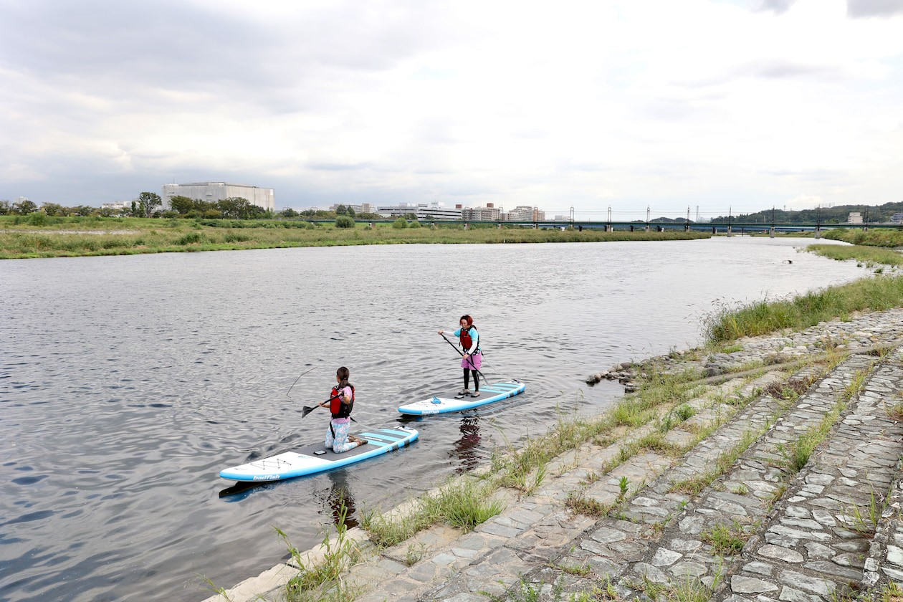

FIRST TIME
初めての方へ
深呼吸したくなる多摩川のほとりで、自分のペースで過ごす時間。
RIVER PARK 聖蹟桜ヶ丘は、運動が得意な方だけでなく、「少し心を休めたい」「自然の中で気分を切り替えたい」というすべての方に開かれた場所です。
HOW TO SPEND
ここでの過ごし方

朝の光と多摩川の風を感じるスタジオ体験
2階のスタジオは約100㎡の広さがあり、大きな窓から多摩川の流れと広い空が見渡せます。鳥の鳴き声や風の音を感じながら行うヨガやピラティスは、日常の緊張をほどき、深い呼吸を取り戻させてくれます。
スタジオプログラムを見る
水辺のSUPとボルダリングで、自然体に戻る
目の前の多摩川へそのまま漕ぎ出すリバーSUPや、パズルのように身体を動かす1階のボルダリングジム。どちらも「はじめてのクラス」をご用意しているため、未経験の方でもインストラクターと一緒に安心して楽しめます。
アウトドア＆SUPを見る
1階フロントでの受付と手ぶら感覚のレンタル
ご来館時は1階のクラブハウス受付へお越しください。ヨガマットやプロップス、クライミングシューズ、SUPライフジャケットまで専用ギアが揃っているため、お仕事帰りやお散歩の途中でも気軽にご参加いただけます。
料金プラン・レンタル詳細を見るRENTAL & FACILITY
持ち物・レンタル備品のご案内
スタジオ備品完備
Yoga / Pilates / TRXスタジオ内にはレンタルヨガマット、ブロック、ベルト、ボルスター、ラグなどを完備しています。動きやすい服装とお飲み物があれば気軽にご参加いただけます。
ボルダリング＆SUP備品
Bouldering / River SUPボルダリングプログラムにご参加の方は、クライミングシューズ・チョークのレンタルが無料です。SUPボード・パドル・ライフジャケットもレンタルをご用意しています。
ロッカー＆シャワールーム
Locker & Powder Room1階・2階にロッカー・シャワー・パウダールームを完備。1階シャワーは屋外から直結しているため、リバーSUPや河川敷ランニングの後もそのまま快適にご利用いただけます。
FAQ
よくあるご質問
- Q. 運動が久しぶり・体が硬くても大丈夫ですか？
- A. はい、ほとんどの方が未経験や久しぶりの運動からスタートされています。リラックス＆メディテーションやアロマリラックスヨガなど、強度★のやさしいプログラムからぜひお試しください。
- Q. 入会しなくても1回ずつ体験（都度利用）できますか？
- A. はい、すべてのスタジオプログラム・アウトドア・SUP（各3,850円/回）およびボルダリングジム（大人1,980円/回）は、入会不要のドロップイン（都度利用）でご参加いただけます。館内見学も随時無料で承っております。
- Q. 毎週土曜朝の「WALK & RUN」は予約が必要ですか？
- A. 毎週土曜日 朝7:00〜開催しているグループウォーク＆ランは、お申し込み不要の自由参加型です。走力や年齢に関係なくどなたでもご参加いただけます。